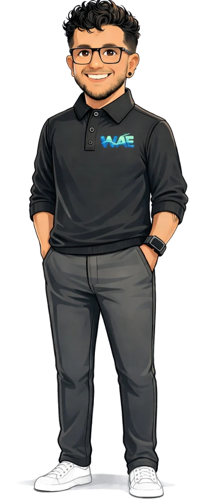

Rótulo de demostración · Curso 01Destino: Diagnóstico · 10 días
Cada caso con destino.
WAE es una firma de Data & AI Engineering. Integramos correo, hojas de cálculo, ERP y banco en flujos que avanzan solos y se detienen, a medio paso, cuando hace falta una persona.
- Destino
- Diagnóstico
- Plazo
- 10 días hábiles
- Muestra
- ≤ 10.000 registros
- Entorno
- Sandbox, nunca producción
Hoy muchos casos salen sin destino.
- Correos reenviadosSin dueño
- Hojas de cálculoSin fuente única
- ERP, WMS, CRM y bancoCruzados a mano
- IA sin datos ni reglasSin controles
Diagnóstico de un proceso crítico en 10 días hábiles.
Medimos la operación real antes de elegir tecnología. Un proceso, un área, un conjunto acotado de sistemas y una muestra de hasta 10.000 registros, trabajada en sandbox y nunca en producción.
Entregamos mapa del estado actual, matriz de riesgo, blueprint de arquitectura, prototipo acotado y caso económico con supuestos explícitos.
Solicitar diagnóstico- 01–03InmersiónMapa actual y matriz de riesgo
- 04–05DiseñoBlueprint frente a alternativas simples
- 06–08PrototipoUn flujo crítico en sandbox
- 09–10Caso económicoSupuestos explícitos y sesión ejecutiva
Una parada a medio paso no es una falla. Es el control.
La IA avanza solo lo que puede respaldar. Se compara contra reglas e integraciones simples y opera dentro de cinco controles.
- PermisosSolo toca lo declarado
- Umbral de confianzaBajo el umbral, retiene
- Límite económicoSobre el tope, decide una persona
- Aprobación humana: el curso se detiene a medio paso hasta que una persona decide, con el contexto preparado.
- AuditoríaDecisión, responsable y hora
El método en seis pasos
- 01DiagnosticarLínea base medida sobre una muestra real
- 02DiseñarArquitectura proporcional, comparada con alternativas
- 03ValidarPrototipo en sandbox con criterios acordados
- 04ConstruirEntregas incrementales con revisión y pruebas
- 05GobernarPermisos, umbrales, aprobación humana y trazabilidad
- 06OperarMonitoreo, documentación y transferencia
Para consultoras e integradores: el Pod Administrado.
Una célula de Data Engineering se integra a su proyecto con evaluación técnica, supervisión arquitectónica, estándares, documentación y plan de continuidad. No es alquiler de perfiles.
Evaluar un pod| Qué recibe su proyecto | Pod WAE | Staffing |
|---|---|---|
| Evaluación técnica de perfiles | Incluida | Depende del proveedor |
| Supervisión arquitectónica | A cargo de WAE | A cargo de su líder técnico |
| Estándares y revisión de código | Definidos por WAE | A cargo de su equipo |
| Documentación y conocimiento | Parte de la entrega | No garantizada |
| Rotación de un integrante | Plan de empalme | Se empieza de nuevo |
Lo que está en el rollo. Y lo que todavía no.
WAE publica solo lo que puede respaldar y separa la experiencia previa del equipo de los proyectos contratados por WAE.
Experiencia previa del equipo


Organizaciones donde integrantes del equipo participaron antes de WAE. No son clientes de WAE.
Certificaciones del equipo


Casos contratados por WAE: curso sin imprimir
Aún no hay casos contratados por WAE para publicar. Preferimos un curso en blanco a un caso inventado.

Próximo destino: su proceso.
Cuéntenos cuál proceso le cuesta más hoy. Respondemos con una propuesta de diagnóstico de alcance cerrado.